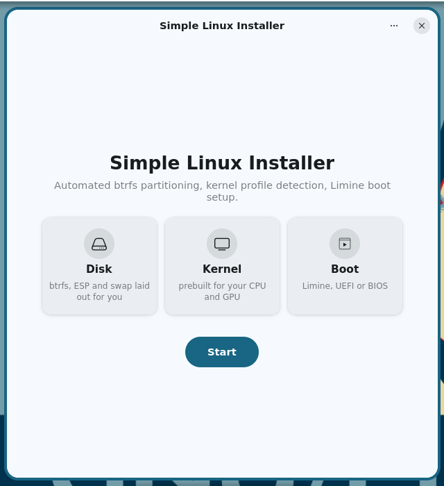
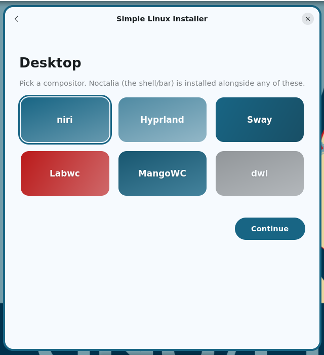
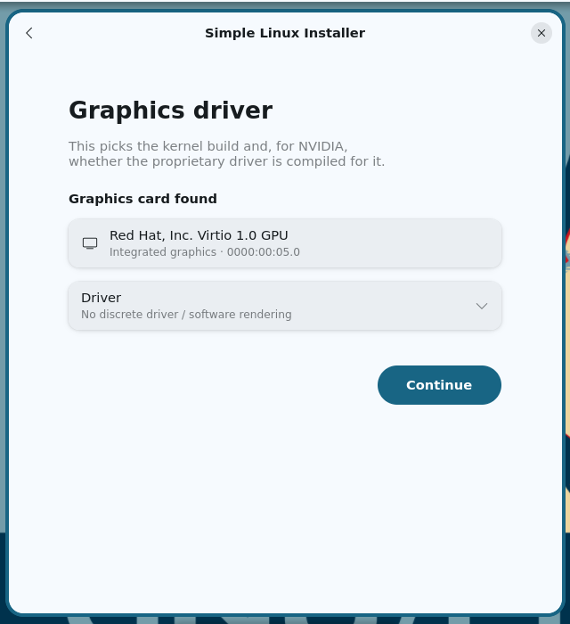
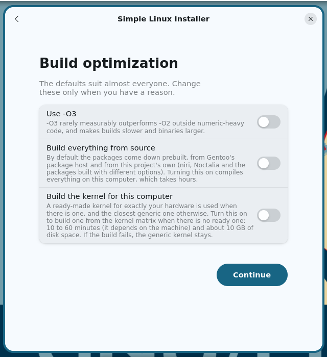
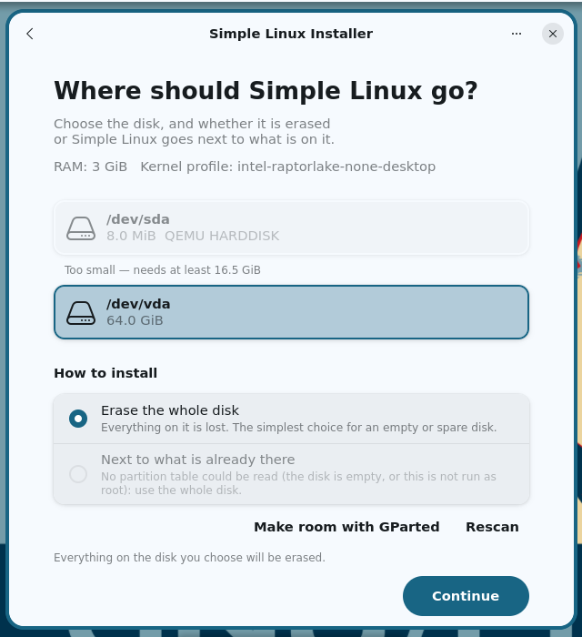
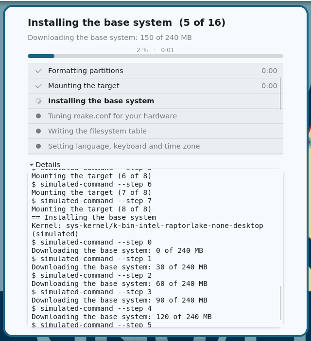

Projects /
Installer
A Rust installer for Gentoo: sixteen resumable phases, a hardware-matched kernel and binary packages, with a text and a GTK4 front end.
What it is
This is the installer and the image build scripts behind Simple Linux. It installs Gentoo (OpenRC, Limine) onto a disk from binary packages, with a kernel picked for the machine's hardware. In a QEMU VM with KVM that takes about ten minutes when it merges the packages one by one, and under two minutes for the default desktop, which comes as one archive. Those times are VM measurements.
It has two front ends over one core: a ratatui text installer (which also runs --headless) and a GTK4 + libadwaita wizard. It is written in Rust.

Architecture
installer-coredoes everything that actually happens, with no UI code. Both front ends only call into it.installer-cliis the text installer and headless mode, used by the minimal image.installer-guiis the wizard used by the GUI image (niri + Noctalia).profiles/,slp-profiles/andslp/hold the flavors and software groups as data, the library that reads them, and theslpcommand.iso/builds the live images, the offline payload and the release.
The TUI, the GUI and --headless run the same 16 phases: preflight, partition, format, mount, deploy, portage config, fstab, locale, users, kernel build (optional), GPU, desktop, packages, bootloader, post hooks, finalize. A journal at /run/installer/journal.json lets a failed install be resumed: destructive phases are skipped on the journal alone, the others only if their result is still on the disk. Every shell-out goes through a CommandRunner, so the logic is unit-tested without root or a disk.
Key features
- Hardware-matched kernel. CPU microarchitecture, GPU vendor(s) and laptop or desktop are detected, and a prebuilt kernel is picked from the store, falling back step by step to a generic x86-64 v2/v3 build. Nothing is compiled and
emergeis not used for the kernel: deployment is a file copy plus its modules. An unrecognised CPU gets the generic build rather than a guess that could use instructions it lacks. - Optional kernel built on the machine (off by default). When the store has no kernel for exactly this hardware, it can fetch Linux 7.1.8 and the kernel-matrix and build on the new system. A failure keeps the ready-made kernel.
- Install next to other systems. On a GPT disk it can use free space and keep what is there. An existing EFI system partition is mounted and never formatted, and other systems found on it get chainload entries in
limine.conf. Shrinking is left to GParted. - Binary packages. From Gentoo's binhost and the project's own, used only if the USE flags match, so what the installer asks for is pinned in
installer-core/assets/binhost/and the binhost is built from the same files. A full install of every software group merged 263 packages in a VM and compiled none, in about 15 minutes. The default groups take about 10 minutes (261 packages; 749 s before nine packages were added to the binhost, 642 s after). - The default desktop as one archive. For the default groups the installer unpacks
software-desktop-default.tar.zstinstead of merging: 96 s online (archive served from the host) and 52 s offline, in a VM. - Offline install. The
*-offline.isoimages carry the stage3, kernels, packages, Portage tree and configs. The installer serves them on127.0.0.1and points every URL at it, then restores the public URLs at the end so the installed system updates normally. - Keyboard, time zone, graphics. Up to four layouts with a switch key; a time zone page that searches cities, capitals and countries; graphics page that names every card and lets you choose the one the desktop is drawn on.
- Every decision is a
git log./etc/portageof the target is a git repository.






Design choices
- OpenRC only, no systemd. Networking is
iwdover D-Bus, not NetworkManager. - Limine only for the bootloader (BIOS and UEFI), with optional Secure Boot: a key is made for this machine, Limine is signed and the config and kernel pinned by hash. Off by default.
- Automatic partitioning: 512 MiB ESP, swap 1:1 with RAM clamped to 8 to 96 GiB, then
/and/homeas separate partitions. btrfs with subvolumes (@,@var,@log,@home) by default, ext4 optional. No LUKS yet. - Accounts: root stays locked; the first user is in
wheeland getsdoas. - Stage3: Gentoo's official
amd64-openrcor the project's slimmer one. A digest mismatch aborts before anything is unpacked.
Flavors, software groups and slp
What gets installed is data in profiles/, compiled into the installer. A system is one flavor (minimal, desktop, workstation) plus mix-ins, which are the software groups on the Software page: Wi-Fi, terminal, browser, development, media, office, gaming tools, Steam, Minecraft and others. Each group says which packages, USE flags, licences and services it needs. The same data drives the slp command on an installed system (slp show | list | info | flavor | mix-in | apply | install | rebuild, in the style of Funtoo's epro). Programs Portage does not have come from the profiles' own overlay slp-local; Steam comes from steam-overlay. Groups from these overlays are not on the offline images and not in the binhost.
Using it
Most people will use it through the Simple Linux images. To build and test the code:
cargo build --release # installer-gui needs GTK4 + libadwaita
cargo fmt --check && cargo test # about 195 core tests and 17 CLI testsA headless install reads environment variables and prints the same event stream the GUI shows. The target disk is confirmed by repeating its path:
GENTOO_INSTALLER_DISK=/dev/sdX GENTOO_INSTALLER_CONFIRM_ERASE=/dev/sdX \
GENTOO_INSTALLER_USERNAME=me GENTOO_INSTALLER_PASSWORD=... \
installer-cli --headless--resume continues the unfinished install this live session remembers. GENTOO_INSTALLER_SIMULATE=1 gives a click-through with no disk, network or chroot, and GENTOO_INSTALLER_GUI_PAGE=keyboard|timezone|desktop|gpu|disk|software|optimization|network installer-gui opens the wizard on a page. The README lists every variable (placement, kernel build, packages, window manager, GPU, Secure Boot, custom stage3 and others).
After the install, simple-linux-update offers check, kernel and system: whether the store has a different build of the machine's kernel, fetching it while keeping the running one as a previous-kernel boot entry, and emerge --sync plus emerge -uDN @world.
What was tested and what was not
Most bugs in this project were found by real runs, not unit tests: a headless install in a VM from a minimal image onto a blank disk, then booting the installed disk. Verified in QEMU/KVM: full headless installs (default and all software groups, binary only), the installed disk booting to a login with the right user, shell, subvolumes and services, resume after a failed phase, the offline GUI image installing with the network blocked, an install into the free space of a disk holding other systems (they stayed intact, the Limine menu listed them, the new system booted), an install that built its own kernel and booted on it, both images on BIOS and UEFI, and the GUI wizard on a virtual 3D GPU.
Not verified: real hardware beyond my own machines; a picture of the installed desktop in a VM; the graphical wizard end to end after the latest changes (the free-space choice and layouts were looked at, not driven through an install); an end-to-end offline install from the minimal image; the kernel build with clang or for NVIDIA; booting the other systems from the Limine menu; the Wi-Fi flow against a real iwd; Secure Boot of an installed system under OVMF. LUKS is not implemented.
Known gaps: downloads are tested in a VM rather than in cargo test; useradd -p skips the password-quality check that chpasswd would apply; the GUI has no page for host name and locale list (defaults simple-linux and en_US.UTF-8, or the environment); the text installer has no free-space or layout choice (environment only); the installer UI is not translated. The screenshots above are from release 0.2.33 and may differ from the current wizard.
Links
Source (GPL-2.0-or-later). The installer has no releases of its own: its releases are the Simple Linux images, listed on the Simple Linux releases page. Related: Simple Linux, Portage Store, ustan, tui-shim.